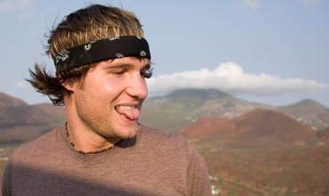

Traveller/Co-Creator
Scott Wilson
Scott’s passion for travel started very early in life. As a child he covered his bedroom walls in maps from National Geographic and would daydream what those places looked like. Now, together with co-creator Andre Dupuis, Scott is seeing a vision for a new type of travel show come to life. Nominated for a Gemini Award for his work on DEPARTURES, Scott continues to share his travel experiences with enthusiastic audiences at speaking engagements and through hosting and producing new and upcoming programs.
Scott and Andre have paired their mutual love of scuba diving with their passion for travel in the acclaimed adventure series DESCENDING which airs on OLN in Canada and Travel Channel internationally.
Scott continues to challenge himself personally as a producer, diver, motorcycle enthusiast and pilot.
Follow Scott on twitter @scottdescending.

Traveller
Justin Lukach
Justin Lukach grew up in Brantford, Ontario. As a teenager, he was best friends with Scott Wilson and the two were inseparable. Following high school, the pair began to drift apart, with Scott focusing on music and media, and Justin taking a course towards engineering. Justin eventually took up several opportunities in Las Vegas, before finally settling down in Hawaii. He was working for an engineering firm dealing with fire sprinkler systems, when he received a call from Scott and an offer to leave his day job behind, come back to Canada, and begin a world wide trip with DEPARTURES.
Justin is an avid surfer, BMX’er and car enthusiast.
Follow Justin on twitter @MrJustinLukach.

Director/Camera/Co-Creator
Andre Dupuis
Andre Dupuis is a multiple Gemini award-winning cinematographer. His passion and talents have evolved with the latest techniques and technologies ensuring a consistently fresh and exciting way of visual story telling. If the scope of his artistic vision requires a new skill set, Andre does not sleep until he has mastered what he needs to execute a project with style.
Along with Scott Wilson, Andre co-founded the TV / Video production company Echo Bay Media who are the creators and creative force behind the DEPARTURES and DESCENDING television series. With Andre's visual mastery, Echo Bay Media continues to produce leading edge creative content for commercial and broadcast productions, excelling most notably in the travel production realm.
Follow Andre on twitter @_AndreDupuis and on Instagram at andre_dupuis.
Producer
Jessie Wallace
As a writer, director, photographer and producer on a number of projects, Jessie is always working towards bringing something new to an International audience while remaining focused on strong story.
Founding partner of The ShootingStar Film Co. Jessie has produced projects in over 40 countries worldwide and is a co-creator and Exec Producer on two genre-bending productions, an internationally shot martial arts production THE ORDER: FIRST DEGREE premiering August 2014 on OLN, and the spooky American Fringe road trip series THE VISITOR.
As Producer and Showrunner on DEPARTURES, Wallace shepherded the series to international success bringing the strong stories and inspirational content to the documentary format. During this time she co-founded DEPARTURES Distribution Inc. and has licensed the series in over 25 languages to 130 countries worldwide to National Geographic Channels, Travel Channel International, and Esquire to name a few.
Follow Jessie on twitter @shooting_jessie and on Instagram at jessiewallace.
Producer
Steven N. Bray
Steven N. Bray has produced two films and show-run 62 episodes of television in over 40 countries including India, Papua New Guinea, Cambodia, Cuba, Kenya, Egypt, Antarctica and North Korea. Bray garnered a 2009 Genie Award nomination (Best Motion Picture) for his first feature AMAL and is currently releasing his follow-up SIDDHARTH. Bray was show runner and distributor of the 42-episode television travel/adventure series DEPARTURES, which played to over 100 million households in six continents. His most recent adrenaline/doc series BOUNDLESS can be found on Travel + Escape Channel in Canada and on Esquire Network in the U.S.
Co-Producer
Darren Portelli
Darren’s work producing and executive producing short films has resulted in winning numerous awards including a Canadian Golden Sheaf (YELLOW BIRD) two Platinum Remi’s (MIRANDA & GORDON and WATERING MR. COCOA) and a Golden Remi (THE LAST BANG). He also produced the cross-country, 18 webisode series, THE NISSAN VERSA LARGER THAN LIFE ROAD TRIP in 2006. Currently, Darren is in development with writer/director Emmanuel Shirinian, on their debut comedic feature film BORN INTO THIS.
Darren joined the DEPARTURES team in Season 2, and produced episodes covering journeys through Morocco, Libya, Mongolia, Iceland, Zambia and Madagascar.
Editor
Alvin Campaña
A graduate of Sheridan College's Media Arts program, Alvin Campaña is a Toronto-based writer, director, camera operator, editor and visual effects artist.
Currently, Alvin is editing an independent feature film, NEW YEAR, and recently won a 2009 Gemini Award for his work as editor for DEPARTURES (Cambodia). His latest project, Lucious & Sumat, is in post-production, to be completed in 2010.
In his spare time, Alvin enjoys travelling, performing simple magic tricks, singing karaoke, eating, and poorly playing musical instruments. Some of his music can be heard in season 2 of DEPARTURES.
Producers' Assistant
Kerry Young
Kerry Young is a graduate of the 2006 Producer’s Lab in CFC’s Film Resident Program. She has produced 7 short films that have played at festivals around the world. Kerry is a big fan of the DEPARTURES crew and as such was thrilled to be able to join the team for Season 3. Kerry is drawn to character driven stories which made DEPARTURES a great fit. Kerry travels as much as she can and made a trip around the world in 2004 and couch surfed with friends in Vancouver, Los Angeles, Australia, Singapore, Vienna and London and this year spent a long weekend in Paris in the springtime.
Music Coordinator
Shannon Latham
Shannon’s love of travel has brought her to destinations as diverse as Nepal, Spain, Australia and even a scientific research camp in Canada’s far north.
As a music coordinator for DEPARTURES, she's had the opportunity of working with some of Canada’s most talented unsigned artists.
In addition to her work on DEPARTURES, she has also coordinated source music for several feature films including: CYBORG SOLDIER (Tiffani Thiessen), STATIC (Kathleen Robertson) and DEVIL'S MERCY (Stephen Rea). Her background in community radio and her work at a prominent Toronto Arts venue have given her access to the best of Canada’s independent music scene.